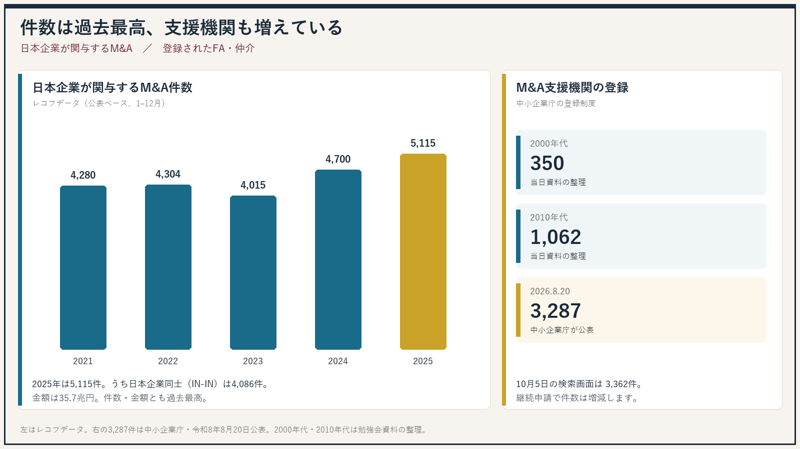
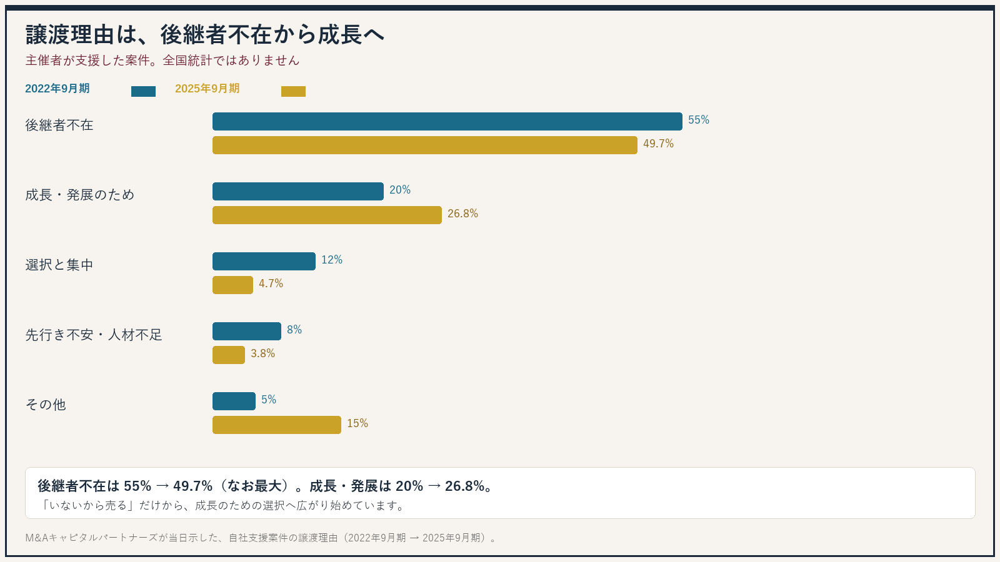
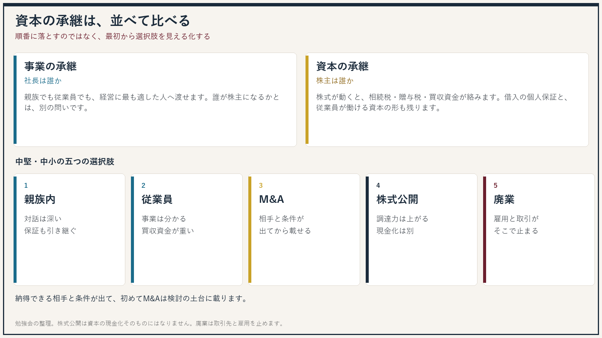
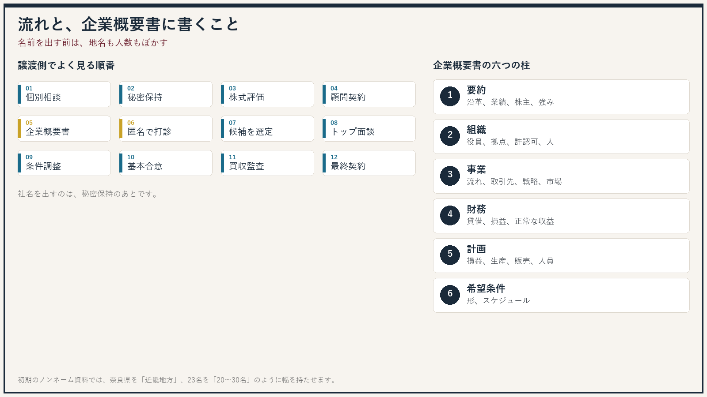
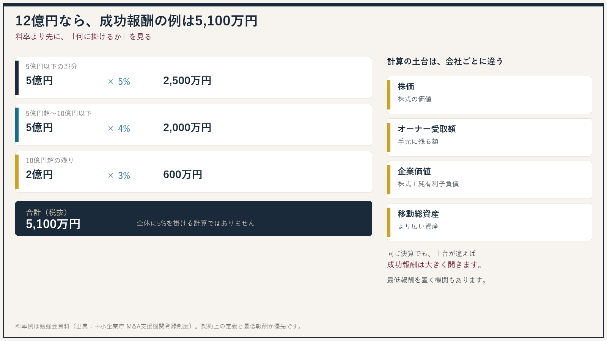

レコフデータが集計した、日本企業が関与するM&Aの公表件数は、2025年（1–12月）に5,115件でした。2024年の4,700件から8.8%増え、件数・金額ともに過去最高です。金額は35.7兆円。内訳は、日本企業同士（IN-IN）が4,086件、日本企業による海外企業の取得（IN-OUT）が657件、海外企業による日本企業の取得（OUT-IN）が372件です。勉強会の資料が棒グラフの頂点に置いていた5,115件は、この全体件数と一致します。同じ資料は2026年1–6月を2,647件としていました。上期なので、通年の5,115件とは並べません。
件数とともに、仲介やフィナンシャル・アドバイザー（FA）も増えています。中小企業庁は2026年8月20日、M&A支援機関登録制度の登録が3,287件（法人2,531、個人事業主756）になったと公表しました。当日の資料は、同じ制度をもとに、2000年代350、2010年代1,062、そしてこの3,287件、という増え方を示していました。本稿を確認した2026年10月5日、登録支援機関データベースの検索画面は3,362件を表示していました。登録は年ごとの継続申請が前提で、件数は積み上がるだけではありません。
オーナーのもとには、仲介、金融機関、会計事務所から、資本提携の提案が届きやすくなっています。M&Aは、特別な人だけの話ではなくなっています。

この比率は、全国のM&A全体ではありません
55%や26.8%は、勉強会の主催者が自社で支援した案件を、2022年9月期と2025年9月期で比べた数字です。日本全体の譲渡理由を代表するものとして読まないでください。
後継者不在
55%から49.7%へ、5.3ポイント下がりました。適任者不在を含みます。依然として最大の理由ですが、「後継者がいないから、という一辺倒」ではなくなっています。
成長・発展のため
20%から26.8%へ、6.8ポイント上がりました。成長投資、市場の拡大、人材の獲得を目的にした案件が増えている、という整理です。守るためだけではない、ということです。
ほかの区分も動いています。選択と集中は12%から4.7%へ、先行き不安・人材不足の解消は8%から3.8%へ下がり、その他は5%から15%へ上がっています。その他には、アーリーリタイア、創業者利潤の確保、ファンドの出口などが含まれます。

承継には二つあります。事業の承継は、誰が社長として経営するかです。親族でも従業員でも、最も適した人に渡せます。大企業の子会社の社長になった方が、経営に集中できる場合もあります。資本の承継は、誰が株主として最終的な責任を持つかです。株式が動くときには、相続税、贈与税、買収資金が絡みます。借入の個人保証を引き受ける重さも残ります。従業員が長く働ける資本の形を残すことも、オーナーの仕事です。
中堅・中小企業の選択肢は、大きく五つです。
親族内承継
対話と相互理解は深い一方、後継者不在、株式の異動に時間がかかること、個人保証の引継ぎが残ります。
従業員承継
事業を知る人に渡せる一方、株式の買収資金が足りないこと、社長の個人保証を外せないリスクがあります。
M&A
会社はより強い基盤で育ち、オーナーは創業者利潤と個人保証の解除を検討できます。相手と条件が見えるまで、良し悪しは判断できません。
公開と廃業
株式公開は調達力を上げますが、資本の現金化そのものにはなりません。廃業は事業を止め、雇用と取引先に迷惑をかけ、借入を返せないリスクが残ります。
かつては、子どもや親族、次に従業員、それで難しければM&A、最後に廃業、と順番に落とす考え方が一般的でした。当日の整理は、最初から横に並べて比べることです。M&Aは相手が最初から見えないため、情報を集めて選択肢を見えるようにしてから判断します。納得できる相手と、納得できる条件が出て、初めて検討の土台に載ります。
相手の型も二つあります。事業会社は、販路や仕入れ、人材のつながりが明確になりやすい一方、グループの色と経営の自由度が論点になります。投資ファンドや投資会社は、いまの経営の独立性を保ちやすい一方、数年後の出口と、借入の返済が将来の収益に戻る点が論点になります。会ってみなければ、どちらが合うかは決まりません。

譲渡側でよく見る順番は、個別相談、秘密保持契約、株式評価の試算、アドバイザリー契約、企業概要書の作成、名前を出さない打診、候補の選定、トップ面談、条件調整、基本合意、買収監査（デューデリジェンス）、最終契約とクロージング、です。譲受側は、ノンネームの検討から入り、秘密保持のあとで企業概要書を見ます。
企業概要書（IM、Information Memorandum）は、会社の詳しいプロフィールです。当日の資料が挙げていた柱は、次の六つです。
沿革、業績の推移、グループ、株主構成、事業の要点、財務の要点を短くまとめます。
経営理念、役員、拠点、許認可、組織図、従業員、保有する機械、労務の状況です。
製品やサービス、主要な数字、業務の流れ、主な取引先、戦略、市場の環境です。
貸借対照表、損益計算書に加え、時価への修正や、一時的な損益を除いた正常な収益力を見ます。
損益の計画と、生産・販売・人員などの計画です。
希望する条件、株式の渡し方、想定するスケジュールです。
名前を出す前の段階では、ノンネームシートを使います。特定につながる情報をぼかし、事業の中身と強み、財務の規模感を中心にします。本店が奈良県なら「近畿地方」、従業員23名なら「20名から30名」、といった書き方です。

中小M&Aの手数料に、一律の法定料金はありません。着手金、月額報酬、中間金、成功報酬の組み合わせは、FAと仲介者ごとに違います。成功報酬だけを置き、着手金や月額を取らないところもあります。交通費などの実費が別になることもあります。着手金や月額が、後の成功報酬に含まれるのかは、契約のときに確認します。出典として当日示されたのは、中小企業庁のM&A支援機関登録制度です。
成功報酬で広く使われるのがレーマン方式です。取引の規模が大きくなるほど、その部分の料率は下がります。全体に一つの率を掛けるのではなく、区分ごとに足します。当日の料率例は、次のとおりです。
| 区分 | その部分の料率 |
|---|---|
| 5億円以下の部分 | 5% |
| 5億円超、10億円以下の部分 | 4% |
| 10億円超、50億円以下の部分 | 3% |
| 50億円超、100億円以下の部分 | 2% |
| 100億円超の部分 | 1% |
取引金額12億円なら、5億円×5%＝2,500万円、次の5億円×4%＝2,000万円、残る2億円×3%＝600万円、合計5,100万円（税抜）です。これは例であり、各社の契約が優先です。
より大きな差は、料率表そのものより、何を取引金額と呼ぶかに出ます。登録データベースでも、株価レーマン、オーナー受取額レーマン、企業価値レーマン、移動総資産レーマン、などが並びます。同じ貸借対照表でも、株式の価値だけを土台にする場合と、借入を含めたより広い資産を土台にする場合では、成功報酬が大きく開きます。小規模な譲渡では料率どおりでは報酬が厚くならないため、最低報酬を置く機関も多い、と当日は注意していました。最低額も機関ごとに違います。
支援機関が増えるなかで、売り手の現金を抜く、銀行などの経営者保証を外さない、契約後に譲渡対価を払わない、といった買い手側のトラブルが問題になっています。不適切な買い手を紹介した仲介の責任も問われます。中小企業庁は、資金力に疑いがある買い手と認識しながらM&Aを成立させた事案について、登録の取消しや注意を行ってきました。登録そのものは、相手の善し悪しを保証する免許ではありません。
全国の登録機関と、標準的な手数料体系は、中小企業庁のM&A支援機関登録制度のデータベースで検索できます。公表されているのは各機関が報告した標準的な体系であり、個別の案件では金額が変わります。契約の前に、少なくとも次の三点を見ます。
FAか仲介か、最低手数料、着手金や中間金の有無、成功報酬の算定方式が載っています。
同じ「レーマン」でも、掛ける対象が違えば手元に残る額は変わります。成功報酬に着手金が含まれるかも確認します。
経営者保証の扱いと、不適切な譲り受け側を共有する仕組みへの参加有無も、データベースに項目があります。
不安があるときは、各都道府県の事業承継・引継ぎ支援センターもあります。登録機関の不適切な対応は、事務局の情報提供受付窓口へ出せます。
本稿は、2026年9月29日の勉強会で共有された整理と、中小企業庁・レコフデータの公開情報を照合したものです。投資助言、法的助言、特定の支援機関の推奨ではありません。手数料と手続は、個別の契約と事案で確認してください。
レコフデータ「2025年のM&A回顧」（マールオンライン。日本企業が関与する件数5,115件、IN-IN 4,086件）
https://www.marr.jp/menu/ma_statistics/ma_markettrend/entry/66036
レコフ「2025年のマーケット情報」
https://www.recof.co.jp/crossborder/jp/market_information/2025/
中小企業庁「M&A支援機関登録制度に係る登録フィナンシャル・アドバイザー及び仲介業者の公表（令和8年度公募（7月分））」（2026年8月20日。登録3,287件）
https://www.chusho.meti.go.jp/zaimu/shoukei/2026/260820m_and_a.html
M&A支援機関登録制度（データベースの検索、情報提供受付窓口）
https://ma-shienkikan.go.jp/
https://ma-shienkikan.go.jp/search
https://ma-shienkikan.go.jp/inappropriate-cases
中小企業庁「中小M&Aガイドライン」
https://www.chusho.meti.go.jp/zaimu/shoukei/m_and_a_guideline.html
中小企業庁「登録支援機関の手数料体系の公表を開始しました」（2024年8月30日）
https://www.chusho.meti.go.jp/zaimu/shoukei/2024/240830_02.html
事業の譲渡や、成長のためのM&Aを検討される方は、ビジネスマッチング（M&A）のページもご参照ください。